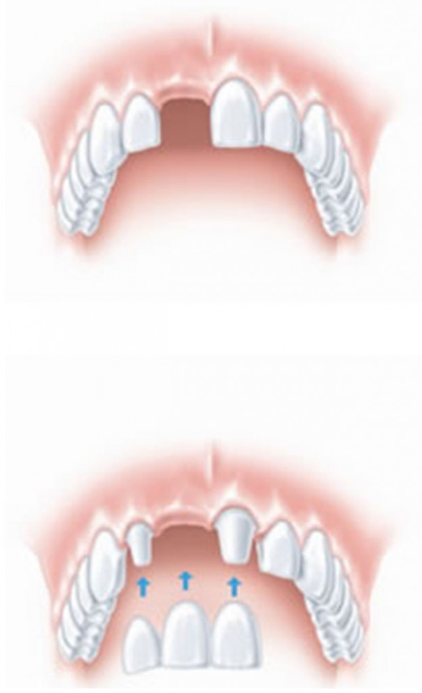

Dantų protezavimas
Protezavimas nuo plombavimo skiriasi keliais aspektais: naudojamomis medžiagomis, danties paruošimu restauracijai bei restauracijos gaminimo vieta. Kaip taisyklė, protezuojami dantys, kurie gana stipriai suirę ir netekę didelio kiekio kietųjų audinių.
Palangos odontologijos centre siūlome protezavimą neišimamais ir išimamais dantų protezais.
Neišimami dantų protezai
Tvirtai fiksuojami burnoje, jų išsiiminėti nereikia:
-
Vainikėliai ir tiltai:
- metalo keramikos;
- bemetalės keramikos;
- cirkonio oksido.
- Dantų įklotai – užklotai.
- Protezavimas vainikėliais ir tiltais ant implantų.

Išimami dantų protezai
Kai trūksta daug dantų, o galimybės protezuotis tiltu nėra:
-
Plokšteliniai protezai:
- daliniai;
- pilni;
- estetinės laikinos 1–3 dantų plokštelės (gaminamos prieš pašalinant dantį);
- elastinės (iš minkštos plastmasės).
- Lanko atraminiai protezai.
- Protezavimas plokštelėmis ant implantų.